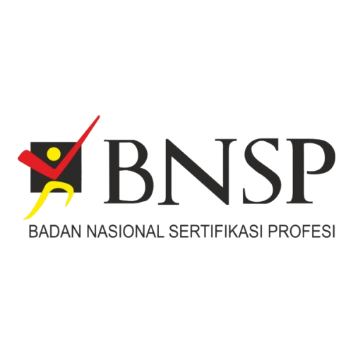
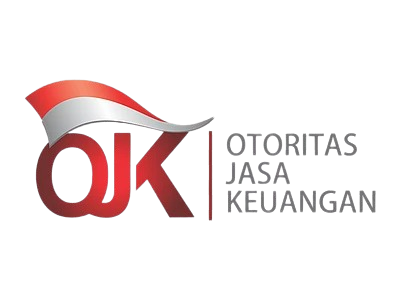

LSP Badan Sertifikasi Manajemen Risiko berkomitmen mendukung
pengembangan kualitas sumber daya manusia bank umum sesuai dengan regulasi terbaru Otoritas Jasa
Keuangan (OJK). Hal ini dilakukan melalui peningkatan kompetensi kerja yang terfokus pada bidang
teknis dan kepemimpinan melalui sertifikasi kompetensi kerja di sektor perbankan. Sesuai dengan POJK
Nomor 24 Tahun 2022 tentang
pengembangan kualitas
sumber daya manusia bank umum, bank diwajibkan mengembangkan kualitas SDM yang dimiliki secara
berkelanjutan. Upaya ini dilakukan dengan memperhatikan asas prioritas dan pemerataan kompetensi
kerja SDM di seluruh lini organisasi
Sesuai dengan POJK Nomor
24 Tahun 2022 tentang pengembangan kualitas
sumber daya manusia bank umum, bank diwajibkan mengembangkan kualitas SDM yang dimiliki secara
berkelanjutan. Upaya ini dilakukan dengan memperhatikan asas prioritas dan pemerataan kompetensi
kerja SDM di seluruh lini organisasi.
Salah satu aspek yang sangat penting menjadi perhatian Bank yaitu
bagaimana Bank dapat mengelola risiko seiring dengan tren perkembangan bisnis dan teknologi
informasi di industri perbankan. Karena itu, peningkatan kompetensi SDM di bidang manajemen
risiko
Bank sangat diperlukan agar penerapan manajemen risiko dilakukan secara komprehensif sebagaimana
dimaksud dalam ketentuan Otoritas Jasa Keuangan mengenai penerapan manajemen risiko.
Dalam rangka memenuhi kompetensi SDM di bidang manajemen risiko
Bank,
LSP Badan Sertifikasi Manajemen Risiko menyelenggarakan Sertifikasi Kompetensi Manajemen Risiko
Perbankan dengan acuan SKKNI Nomor 218 Tahun 2020 dan dalam pelaksanaannya turut mematuhi
peraturan
dan ketentuan dari regulator (OJK dan BNSP). Skema Sertifikasi yang diselenggarakan oleh LSP
BSMR
adalah sebagai berikut:
- Skema Sertifikasi KKNI Kulifikasi 4 Bidang Manajemen Risiko Perbankan
- Skema Sertifikasi KKNI Kulifikasi 5 Bidang Manajemen Risiko Perbankan
- Skema Sertifikasi KKNI Kulifikasi 6 Bidang Manajemen Risiko Perbankan
- Skema Sertifikasi KKNI Kulifikasi 7 Bidang Manajemen Risiko Perbankan
- Skema Sertifikasi KKNI Kulifikasi 6 Bidang Manajemen Risiko Perbankan Tanpa Berjenjang
- Skema Sertifikasi KKNI Kulifikasi 7 Bidang Manajemen Risiko Perbankan Tanpa Berjenjang

